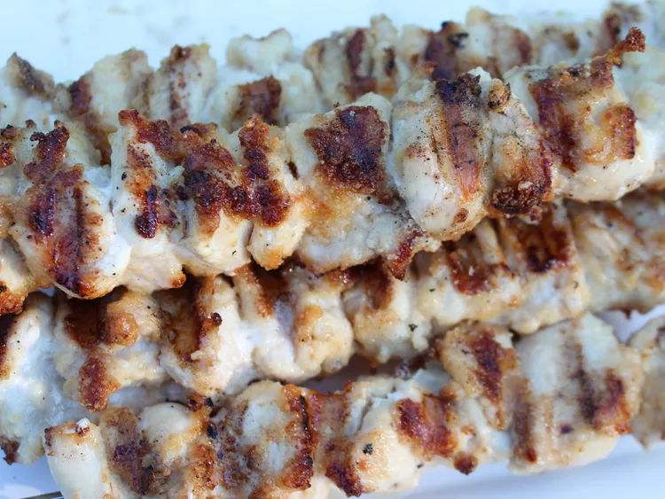

Garlic Parmesan Chicken Skewers

Description
These garlic Parmesan chicken skewers are like Domino's Parmesan bread bites, but in chicken form. With 3 simple ingredients—melted butter, Parmesan, and garlic powder—and grilled until golden brown, you’ll keep coming back for more. Top with red pepper flakes if you want some heat.
These garlic Parmesan chicken skewers are like Domino's Parmesan bread bites, but in chicken form. With 3 simple ingredients—melted butter, Parmesan, and garlic powder—and grilled until golden brown, you’ll keep coming back for more. Top with red pepper flakes if you want some heat.
Ingredients
- 1/4 cup butter, melted
- 1/2 cup grated Parmesan cheese
- 12 tablespoons garlic powder
- 2 pounds skinless, boneless chicken breasts, cut into 1-inch cubes
- 4 large metal skewers
Steps
- Preheat the grill to medium-high heat. Lightly coat the grate with cooking spray.
- Combine melted butter, Parmesan cheese, and garlic powder in a medium bowl. Coat chicken cubes with mixture.
- Thread chicken cubes onto each skewer. Grill until chicken is no longer pink at the center and juices run clear, turning skewers every few minutes, 15 to 20 minutes. An instant-read thermometer inserted near the center should read 165 degrees F (74 degrees C).